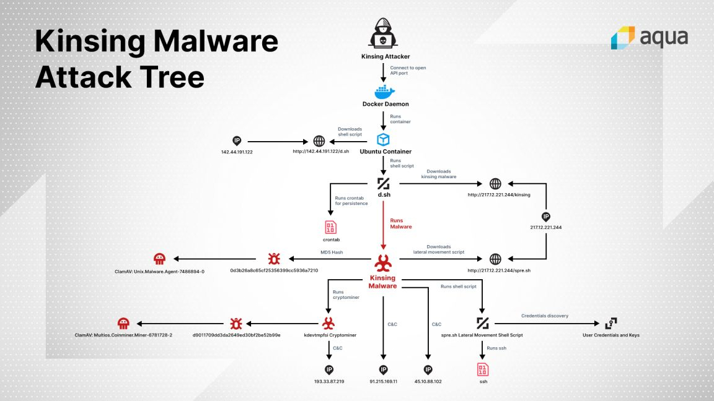

Kinsing Malware
Docker is a technology that allows us to perform operating system level virtualization. A large number of organizations are using Docker to develop, deploy and run applications inside containers. Recently several cases of abuse of the systems running misconfigured Docker Engine have been reported. A new malware “Kinsing” is reported that hunts for misconfigured publicly exposed Docker services and infects them with containers that run crypto miners.
The malware's primary purpose is to mine cryptocurrency on the targeted Docker instance, but it also comes with secondary functions. These include running scripts that remove other malware that may be running locally, but also gathering local SSH credentials in an attempt to spread to a company's container network, to infect other cloud systems with the same malware.
The malware starts with identifying a misconfigured Docker API port that has been left open to the public internet. The malware accesses this open port and the Docker instance connected to it, and run a rogue Ubuntu container. The container issues a command that fetches the Kinsing malware, which in turn downloads and runs a cryptominer. In the final stage of the infection, Kinsing attempts to propagate to other containers and hosts. Deatailed attack chain of the malware is given in Figure 1.

The Kinsing malware attack chain (Source: Aqua Security)
CERT-In encourages to block following IOC’s:
URL’s:
- hXXp://142[.]44.191.122/d.sh
- hXXp://142[.]44.191.122/kinsing/
- hXXp://142[.]44.191.122/al.sh
- hXXp://142[.]44.191.122/cron.sh
- hXXp://142[.]44.191.122/
- hXXp://142[.]44.191.122/kinsing.
- hXXp://142[.]44.191.122/ex.sh
- hXXp://185[.]92.74.42/w.sh
- hXXp://185[.]92.74.42/d.sh
- hXXp://217[.]12.221.244/
- hXXp://217[.]12.221.24/d.sh
- hXXp://217[.]12.221.244/kinsing
- hXXp://217[.]12.221.244/j.sh
- hXXp://217[.]12.221.244/t.sh
- hXXp://217[.]12.221.244/spr.sh
- hXXp://217[.]12.221.244/spre.sh
- hXXp://217[.]12.221.244/p.sh
- hXXp://217[.]12.221.244/Application.jar
- hXXp://217[.]12.221.244/f.sh
- hXXp://www[.]traffclick[.]ru/
- hXXp://www[.]mechta-dachnika-tut[.]ru/
- hXXp://www[.]rus-wintrillions-com[.]ru/
- hXXp://rus-wintrillions-com[.]ru/
- hXXp://stroitelnye-jekologicheskie-materialy2016[.]ru
IP addresses:
- 45[.]10[.]88[.]102
- 91[.]215[.]169[.]111
- 193[.]33[.]87[.]219
Hashes:
- 0d3b26a8c65cf25356399cc5936a7210
- 6bffa50350be7234071814181277ae79
- c4be7a3abc9f180d997dbb93937926ad
- d9011709dd3da2649ed30bf2be52b99e
Best Practices for Docker Security:
- Never expose a docker daemon to the internet without a proper authentication mechanism. Note that by default the Docker Engine (CE) is NOT exposed to the internet.
- Thoroughly check the security settings of Docker instances. In order to ensure that no administrative APIs give access to these instances via the Internet place these special APIs behind a firewall or only making them accessible via a VPN gateway if they need to be accessible online. Otherwise, they should simply be disabled.
- Set quotas for docker resources to limit maximum usage for each resource. Refer below documentation for details https://docs.docker.com/config/containers/resource_constraints/
- Enforce the principle of least privilege. For instance, restrict access to the daemon and encrypt the communication protocols it uses to connect to the network.
- Use firewall rules to whitelist the incoming traffic to a small set of sources.
- Never pull Docker images from unknown registries or unknown user namespaces.
- Frequently check for any unknown containers or images in the system.
References:
- https://blog.aquasec.com/threat-alert-kinsing-malware-container-vulnerability
- https://www.zdnet.com/article/docker-servers-targeted-by-new-kinsing-malware-campaign/
- https://threatpost.com/self-propagating-malware-docker-ports/154453/
- https://www.darkreading.com/attacks-breaches/misconfigured-containers-again-targeted-by-cryptominer-malware/d/d-id/1337492
- https://www.infosecurity-magazine.com/news/docker-crypto-malware/